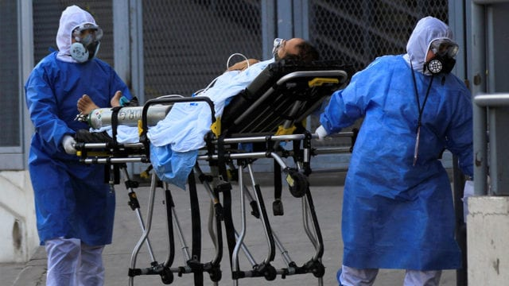
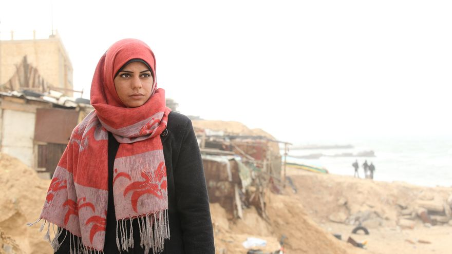
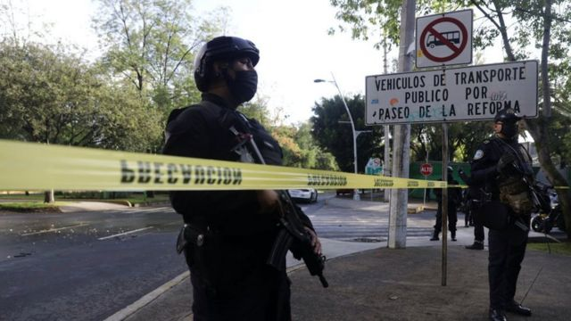
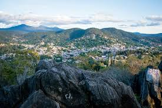
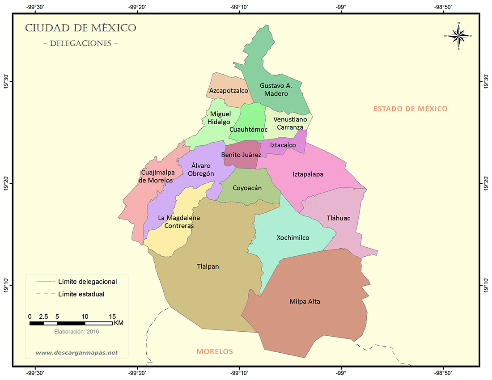
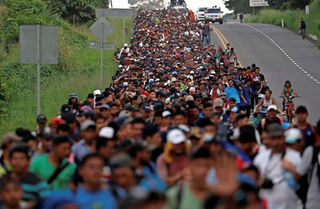

¿Cuál es la situación registrada de los casos de COVID-19 y hospitalizaciones en la cIudad de México y el Estado de México desde que empezó la pandemia?

La guerra entre Israel y palsetina ha generado uno de los conflictos armados más importantes y violentos de las últimas décadas.

En 2019 se registraron los índices de violencia más altos de la última década. Mientras se habla de una disminución de violencia, los números indican otra cosa.

Tras una red de corrupción, se contruyó ilícitamente un centro comercial en La Peña, Valle de Bravo.

Mapa interactivo en donde podemos osbervar los homicidios que ocurrieron en las diferentes delegaciones de la capital mexicana.

Gráfica que muestra el nivel de contaminación de las partículas suspendidas en la Ciudad de México durante el 2020 y el 2021.

Entrevista a la periodista de la coalición de migrantes Natasha Uren Vázquez
Conoce las estaídsticas de los equipos de la liga MX en lo que va de este torneo